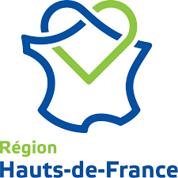
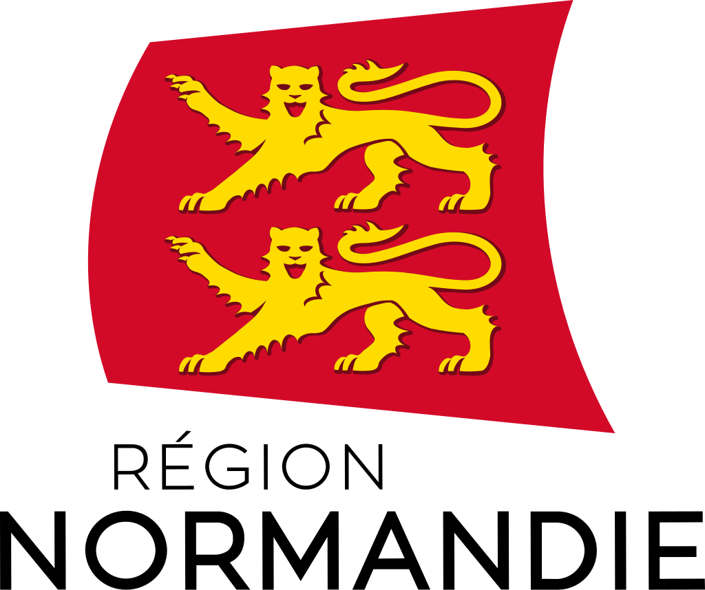
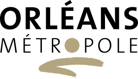
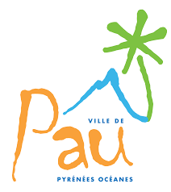

Premier seuil - Deuxième seuil - Troisièpe seuil - Quatrièmse seuil
Reliée à Mess’AJE International, l’association Mess’AJE France a pour mission de coordonner les associations régionales déjà existantes en France et d’en susciter de nouvelles.
Les principales actions de Mess’AJE France sont la proposition de formation continue pour les animateurs Mess’AJE en France, selon la démarche des « Seuils de Foi » élaborée par le Père Jacques Bernard, et l’organisation de sessions tout public, avec lieu et thème différents chaque année.

du 15 au 17 novembre 2024, Tiers-lieu FONDACIO,
2 rue de l’Esvière, ANGERS
Marie-Laure Lemaître
Vannes, le mardi soir, une semaine sur 2, de 18h à 20h
Du 8 au 12 juillet, au Foyer de Charité de COURSET (France)


